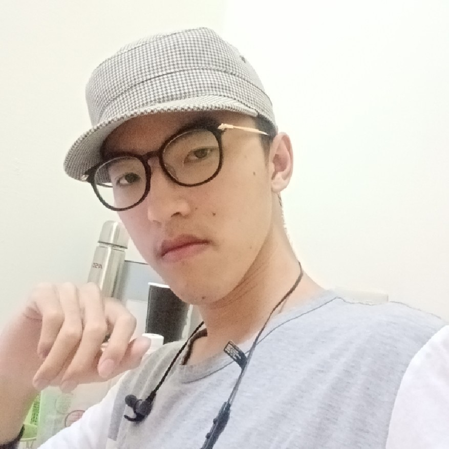
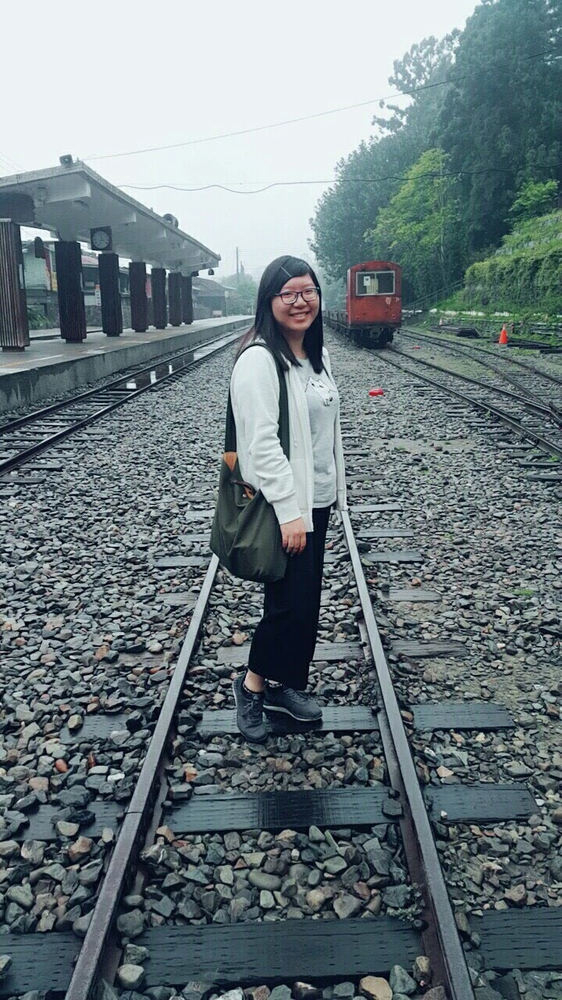
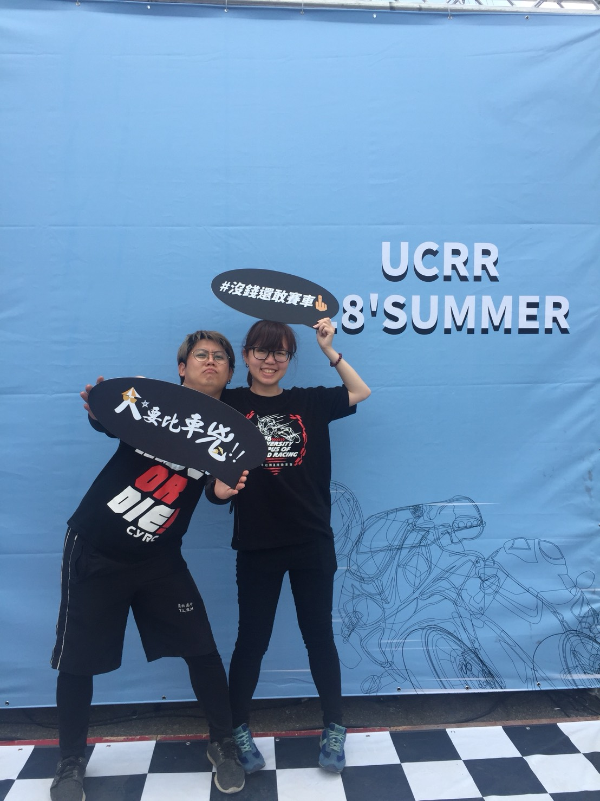

多媒體期中專案組員心得
楊博麟
很感謝我的組員們給我這次的機會發揮創意，大家的分工合作不僅氣氛很好也很有效率。 下半個學期還要持續在CSS上努力，期待期末大家都能有好的表現。 課程感想: 首先要先感謝老師願意讓我加簽這門課，自認很認真在學習但還要更努力，遠距離教學可以讓我更善用自己的時間學習。 有待改進之處: CSS還要更加鑽研，希望很多語法可以熟記。
陳奕維

首先很感謝我的組員，在報告最關鍵的時候我因為腸胃炎住院了，感謝他們的包容與諒解，在剛住院的時候我很緊張，很害怕因為我的緣故導致連累到我的小組，不過幸好復原狀況不錯醫生也允許我短暫請假出去，才讓我能夠與他們憶起完成這份報告。 有待改進的地方：溝通問題、身體管理能力、剪輯技術
葉馨蓮

課程方面，第一次修遠距的課程，發現自我管理很重要，遠距帶來隨時可以上課的便利，也代表著要自己安排時間學習。 期中報告，這次主要負責的是網頁的部分。因為是第一次接觸多媒體網頁，有點手忙腳亂的，許多內容要慢慢的修改才能成功。也發現小組的討論很重要，因為大家關於版面或功能、內容資訊的想法都不一樣。我覺得這次的經驗很好，雖然因為不同班級時間安排不一樣，討論大多線上或課堂中，但是最後都合作討論的度過了，感謝組員們！
王家敏

大家分工做得很好，有問題能夠迅速反應，只可惜我們太晚開始，大家在不同班級時間也比較難喬，到最後定案的時間也很晚，希望組員能夠在討論出更多不同的構思，也能夠多多提出修改建議，協助幫忙找尋網頁設計的資訊，設計出更具備美感跟功能的網頁。